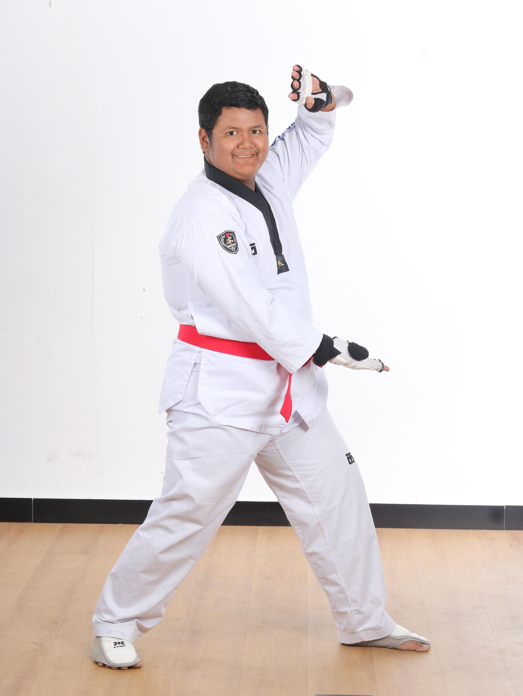

Pantau secara transparan rekapitulasi kehadiran dan peningkatan kemampuan anak.

AktifID Atlet: ARK-2026-0045
Penguasaan kuda-kuda, akurasi tendangan (Dwit Chagi & Dolyo Chagi), dan kelancaran Poomsae Taegeuk 7 & 8.
Stamina fisik, kelincahan gerak kaki (footwork), kecepatan serangan, dan keseimbangan tubuh.
Refleks menangkis, insting membaca pergerakan lawan saat Kyorugi, dan konsentrasi instruksi.
"Bagas menunjukkan peningkatan yang signifikan pada power tendangannya. Perlu sedikit tambahan fokus pada stamina akhir saat simulasi pertandingan ronde ke-3." - Sabeum Alfa